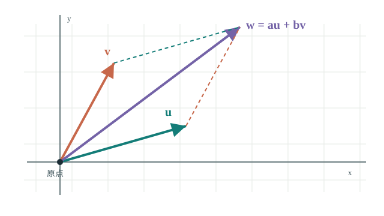

向量与线性组合
向量不只是一个数字列表。它可以表示方向、位移或状态；线性组合则告诉我们，给定的几个向量究竟能生成空间中的哪些位置。
先提出问题：给你两支箭头，你能到达哪里？
想象你站在平面原点。你可以沿着向量 u 走若干倍，再沿着向量 v 走若干倍。所有可能的终点组成什么图形？这就是线性代数的第一个核心问题。
关键在于“若干倍”允许正数、负数和零。走两倍、倒着走半倍、完全不走，都属于同一个规则。不要把线性组合误解成只能把箭头首尾相加一次。
先看图形：把向量首尾相接

几何直觉一支向量描述“从哪里出发都一样的位移”。把它平移到另一个起点，不会改变向量本身；真正重要的是方向和长度，而不是箭头画在纸上的绝对位置。
建立数学语言：坐标、运算、张成
1. 向量是有序坐标
在实数空间中，一个向量可以写成 n 个实数构成的列：
定义 1
两个同维向量逐坐标相加，数乘则把每个坐标同时缩放：
2. 线性组合与张成空间
给定向量 v₁,…,vₖ 和系数 c₁,…,cₖ，所有这类加权和都叫线性组合：
这些向量所有线性组合的集合叫它们的张成空间（span）：
在二维平面里，两条不共线的向量张成整个平面；两条共线向量只能张成一条过原点的直线。向量数量本身不能决定维数，是否线性相关才是关键。
3. 线性无关与基
若只有所有系数都为零，才能让线性组合等于零向量，这组向量就线性无关：
一组向量如果既线性无关，又能张成整个空间，就构成这个空间的一组基。基是“够用且不冗余”的坐标方向；基向量的个数就是空间维数。
推导与例题：从坐标反求组合系数
设 u=(1,2)，v=(2,1)。希望得到 w=(0,3)，问需要多少倍的 u 和 v？令 w=au+bv，按坐标比较：
第一式给出 a=−2b，代入第二式：−4b+b=3，因此 b=−1、a=2。于是：
交叉验证直接代回坐标：第一坐标 2−2=0，第二坐标 4−1=3。再看列向量矩阵的行列式：1×1−2×2=−3≠0，因此 u、v 线性无关，确实能唯一表示平面中的每个向量。
交互实验：改变系数，观察终点
固定 u=(1,2)、v=(2,1)。拖动 a、b，观察合成向量的终点如何移动。注意：系数可以为负，因此终点不局限于两支箭头夹出的区域。
线性组合实验室
1.0u + 1.0v；合成坐标：(3.00, 3.00)
边界与易错点
- 向量不等于位置。 同一个位移向量可以平移到不同起点。
- 线性组合允许负系数。 负系数表示反方向缩放，不是非法操作。
- 张成不等于凸包。 凸组合通常要求系数非负且和为 1；线性组合没有这个限制。
- 基向量不唯一。 同一个空间可以有许多不同的基，但基向量个数相同。
自测：判断张成空间
题目：向量 (1,2) 与 (2,4) 在 R² 中张成什么空间？为什么？
它们共线，因为 (2,4)=2(1,2)。因此张成空间是一条过原点、方向为 (1,2) 的直线，而不是整个 R²。系数方程不可能生成任意二维坐标。
进阶：为什么 R³ 中的三个向量若线性无关，就一定构成一组基？
R³ 的维数为 3。线性无关向量组最多有 3 个；恰有 3 个线性无关向量必张成 R³，因此同时满足基的两个条件。